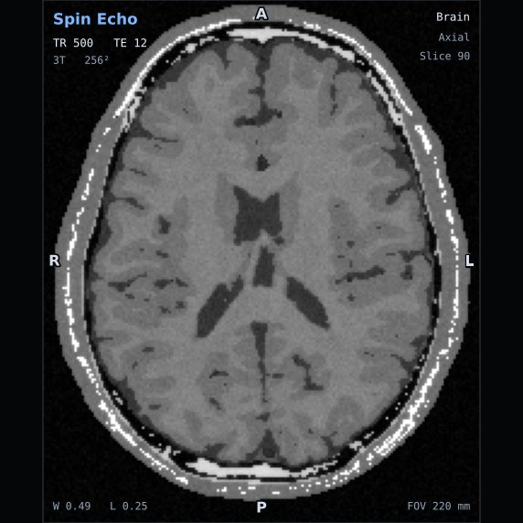
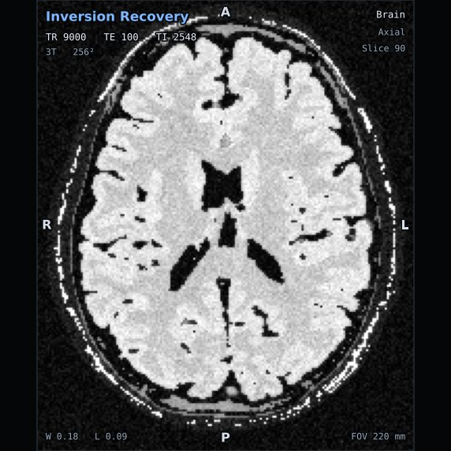
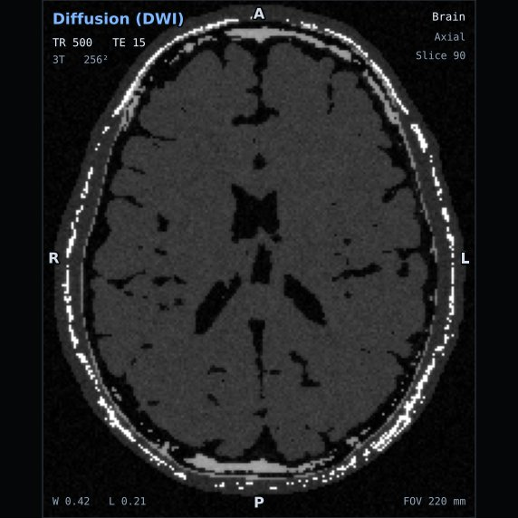
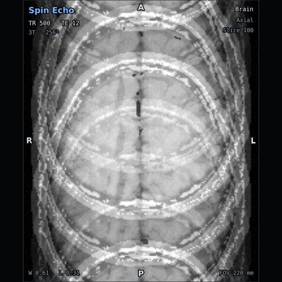

Read-the-Scan Quiz
Test your knowledge of MRI scan interpretation, pulse sequence
parameters, image contrast, and scanner physics.
Question 1 of 4 • Sequences & Weighting
Current Score: 1 / 1

Acquisition Parameters: Spin Echo | TR: 500 ms |
TE: 12 ms | Plane: Axial Brain
Notice: Fluid in the cerebral ventricles is dark; cerebral white
matter is brighter than gray matter.
What is the contrast weighting of this brain scan?
Correct Answer: (A) T1-weighted
Short TR (500 ms) limits longitudinal relaxation so tissues with
fast recovery (fat/white matter) are bright, while short TE (12 ms)
minimizes transverse decay so fluid (CSF) remains dark.
More Practice Questions
Question 2 • Inversion Recovery
Fluid-Attenuated Inversion Recovery (FLAIR)

Scan Readout: Inversion Time (TI) = 2500 ms, TR = 9000 ms, TE = 100
ms
Question: An MRI brain scan uses a long TR (9000 ms),
long TE (100 ms), and an Inversion Time (TI) of 2500 ms. The
ventricles (CSF) appear dark, but lesions in the periventricular white
matter appear bright. What sequence is this?
- A) T1-weighted Spin Echo
-
B) FLAIR (Fluid-Attenuated Inversion Recovery) —
(Correct)
- C) STIR (Short Tau Inversion Recovery)
- D) Gradient Recalled Echo (GRE)
Why? FLAIR uses an inversion pulse with an inversion
time (TI) chosen to null the signal of free fluid (CSF). Because TR
and TE are long, pathology remains bright against dark fluid.
Question 3 • Stroke & Diffusion
Acute Infarction & Diffusion Weighting

Scan Readout: b = 1000 s/mm² • Hyperintense region indicating
restricted water diffusion.
Question: This ultrafast sequence uses strong bipolar
diffusion gradients to detect cytotoxic edema and acute stroke within
minutes of symptom onset. What imaging technique is shown?
-
A) Diffusion Weighted Imaging (DWI) —
(Correct)
- B) Proton Density weighted Fast Spin Echo
- C) Susceptibility Weighted Imaging (SWI)
- D) Time of Flight (TOF) Angiography
Why? DWI sensitizes the MRI signal to the microscopic
Brownian motion of water molecules. In acute cellular ischemia,
cellular swelling restricts water movement, producing brilliant bright
signal.
Question 4 • Quality & Artifacts
Artifact Identification

Scan Readout: Repetitive ghosting patterns propagating across the
image.
Question: Notice the repeating ghost copies of the
skull propagating across the phase encoding direction. What artifact
is occurring and what is the primary cause?
-
A) Chemical Shift Artifact caused by water-fat
frequency difference
-
B) Motion / Ghosting Artifact caused by patient
movement or arterial pulsation — (Correct)
-
C) Aliasing (Wrap-around) caused by too small a
field of view
-
D) Gibbs Truncation Ringing caused by low matrix
resolution
Why? Patient movement (blinking, swallowing,
breathing, or vascular pulsation) introduces phase errors between
successive phase-encoding steps, projecting ghost artifacts along the
phase-encoding axis.